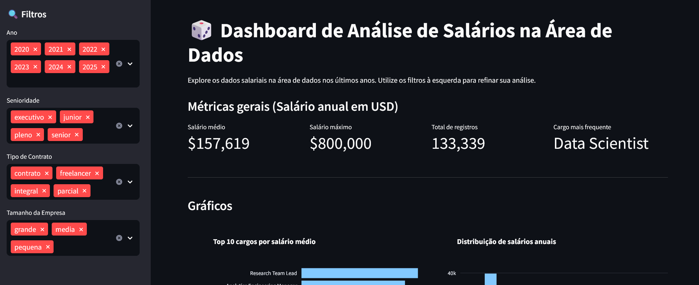
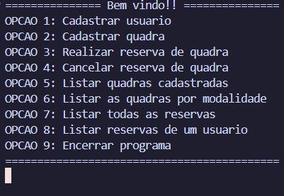

Construindo soluções robustas de software, gerenciando infraestruturas de hardware estáveis e dominando as ferramentas que moldam o futuro da tecnologia.
Estudante de Ciência da Computação no Centro Universitário Ritter dos Reis (UNIRITTER).
Busco atuar de forma efetiva como desenvolvedor de software ou técnico de suporte em empresas de grande porte, aplicando rigor teórico e capacidade analítica para resolver problemas complexos de tecnologia.
Minha trajetória une a ciência teórica com a vivência prática. Possuo um ano de experiência consolidada em Suporte Técnico, onde atuei diretamente com troubleshooting avançado, gerenciamento de infraestrutura e otimização de sistemas operacionais. Essa bagagem me deu uma base sólida para entender o comportamento dos sistemas sob estresse, o que hoje acelera e qualifica minha atuação no desenvolvimento de software.
Instituição: UNIRITTER
Curso: Bacharelado em Ciência da Computação
Foco em algoritmos, estrutura de dados e engenharia de sistemas.
Experiência:
Especialidades: Troubleshooting, network infrastructure, computer assembly/maintenance/installation, customer support via phone and TeamViewer.
Clique nos cards abaixo para visualizar os detalhes técnicos de cada solução.

Exploração e análise de dados utilizando linguagem Python.
Tecnologias: Python, Pandas, Plotly, Streamlit.
Foi realizada uma análise exploratória e estatística de um conjunto de dados utilizando técnicas de machine learning. Projeto desenvolvido para fins educacionais e de prática profissional.

Sistema de gerenciamento de tarefas e recursos para ambientes de negócios.
Tecnologias: C++, Programação Orientada a Objetos.
Sistema desenvolvido em C++ com foco em programação orientada a objetos, utilizando padrões de design para garantir manutenibilidade e escalabilidade. Projeto ainda em desenvolvimento. No exemplo, um sistema para locação de quadras esportivas.